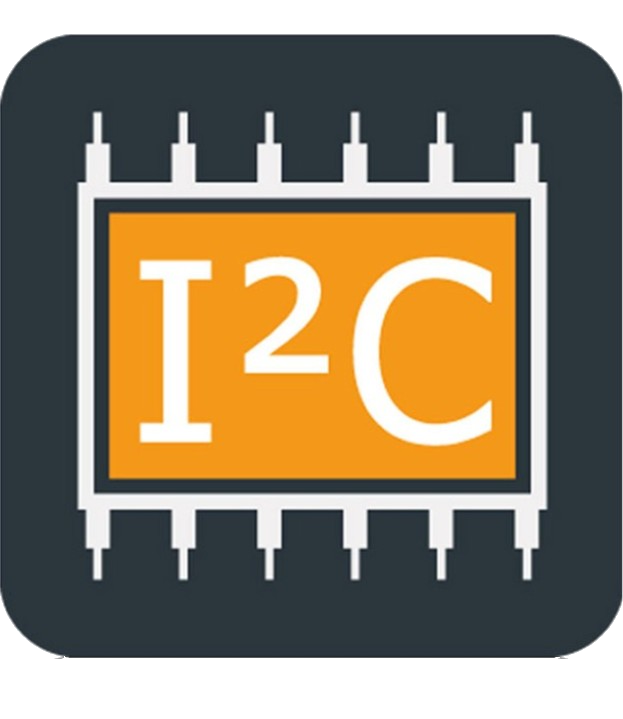
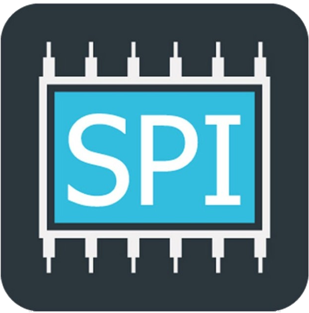
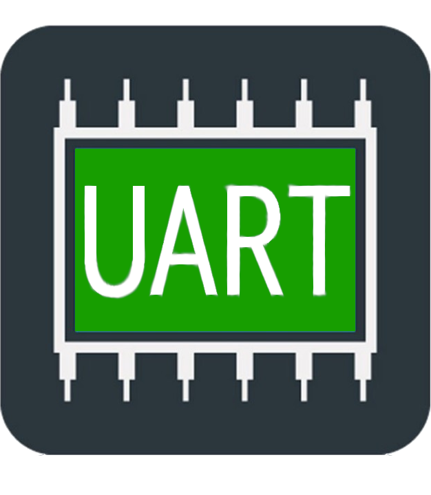

Présentation
Cette mission visait à assurer la pérennité d'un système dont le lecteur RFID d'origine n'était plus supporté et ne comportait pas la sécurité suffisante pour son appplication industrielle. Il fallait comprendre l'organisation des données stockées dans les tags afin de préparer une migration vers une solution plus récente et intégrant un chiffrement AES. J'ai analysé les échanges I2C entre la carte mère et le microcontrôleur du lecteur, ainsi que les échanges SPI entre le microcontrôleur du lecteur et l'ASIC RFID. Pour faciliter cette analyse, j'ai créé une application Windev permettant d'observer, traduire et rendre lisibles les communications capturées. Le tout me permettant de rédiger un rapport sur le focntionnement global du lecteur et de ses communications
Membres
- Travail seul
- Rapport rédigé pour permettre la reprise du projet
Compétences techniques
 Windev
Windev- ASIC RFID

I2C
SPI
UART- Oscilloscope
Compétences transversales
- Autonomie dans la recherche et l'analyse
- Structuration d'une démarche expérimentale
- Transmission technique par rapport écrit et suivi contniu à l'oral
Difficultés et réussites
Le point le plus complexe était de passer d'observations bas niveau à une compréhension exploitable du système complet. La création d'un outil dédié m'a permis de mieux structurer les recherches et de produire une base technique utile pour la suite du projet.
Timeline du projet
-
10/2025
Observation
- Analyse des bus I2C et SPI
- Création d'un outil d'aide à la lecture
- Manipulation de la machine pour varier les cas
-
12/2025
Synthèse
- Étude de la structure mémoire
- Formalisation des méthodes de recherche
- Rédaction d'un rapport sur les recherches